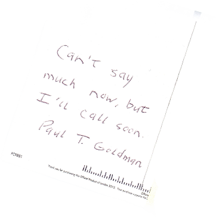
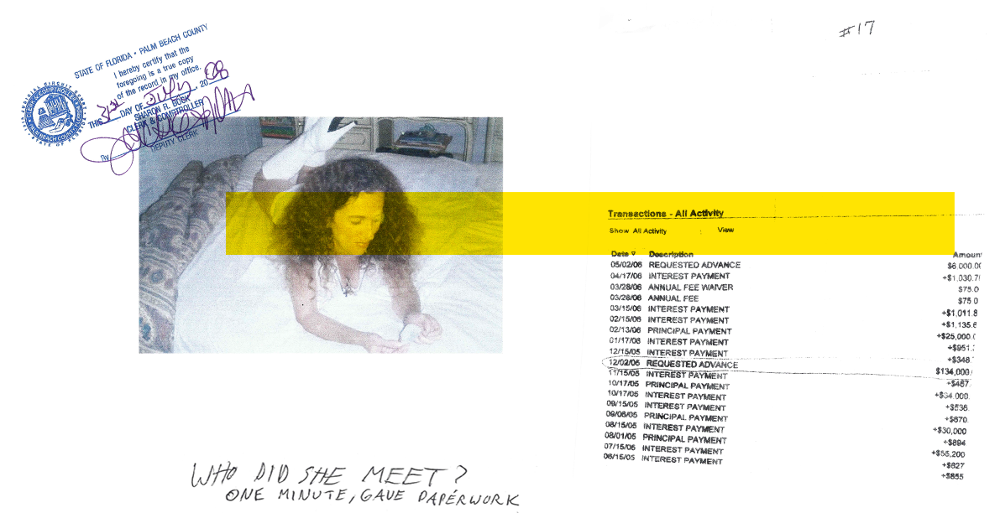
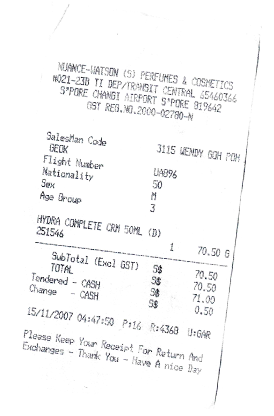
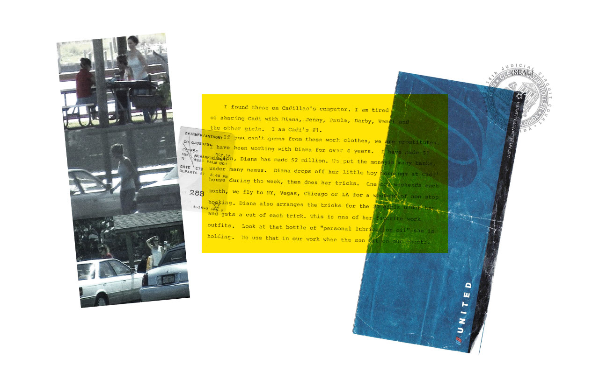
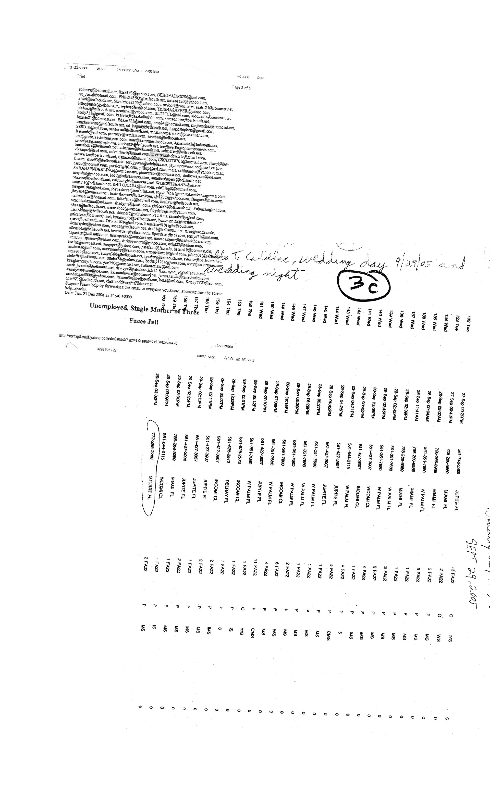

THE TRUE-LIFE STORY OF A MAN WHO
DECIDED TO FIGHT BACK
AGAINST THE TRUE STORY OF HIS LIFE
THE EVENTS RECOUNTED IN DUPLICITY REFLECT THE LAST FOUR YEARS OF MY LIFE
AND REVEAL, WITH SHOCKING DETAIL, THE CRIMINAL ACTIVITIES CARRIED OUT BY A
NEFARIOUS GROUP OF PEOPLE WHO, CONSEQUENTLY, STAND TO LOSE EVERYTHING,
INCLUDING THEIR FREEDOM. IN THE INTEREST OF PROTECTING THE INNOCENT,
THE NAMES OF CERTAIN PEOPLE, PLACES AND DATES HAVE BEEN CHANGED.
ASIDE FROM THAT, HOWEVER, THIS STORY IS AS ACCURATE AS IT IS UNBELIEVABLE.
— PAUL T. GOLDMAN
PAUL T. GOLDMAN IS A MAN ON A MISSION. AFTER FINDING OUT THE WOMAN HE MARRIED WAS A CON ARTIST, LIKELY PROSTITUTE, AND POSSIBLE KINGPIN OF AN “INTERNATIONAL SEX TRAFFICKING RING”, PAUL HAS BEEN ON A FULL-TIME CRUSADE. BUT DURING THIS TIME, HIS DEFINITION OF VICTORY HAS EVOLVED, AND HIS QUEST HAS TAKEN HIM DOWN AN INTCREASINGLY BIZARRE PATH. IT’S A WORLD OF RUSSIAN BRIDES, PRIVATE EYETS AND CARTOON DOG DETECTIVES, LAWYERS WHO MOONLIGHT AS “SHOCK JOCKS”, PET PSYCHICS, TWITTER BOTS, ADULT VIDEO STORES AND INTERNATIONAL “SEX CRUISES”. IT’S A WORLD WHERE FICTION AND REALITY BLUR. THIS FILM WILL CHART PAUL’S UNORTHODOX QUEST AND HOW THE MODERN, SOCIAL MEDIA-DRIVEN WORLD HAS LED HIM TO BELIEVE THAT THE ULTIMATE VICTORY MAY ACTUALLY LIE IN FAME: THE IDEA THAT PEOPLE KNOW HE EXISTS.
2006
Paul meets “Audrey Munson” through a Jewish dating website.
After a brief courtship, they marry. Audrey's behavior becomes
increasingly erratic and she begins to demand money from Paul.
He catches her in an insurance scam and files for divorce.

“THIS COULDN’T BE MY LIFE. THIS WAS SOMETHING THAT HAPPENED
IN A BAD MOVIE TO SOME DELUSIONAL GUY WHO MERITED THE
DECEPTION. THIS WAS SOMETHING THAT HAPPENED TO SOMEBODY
ELSE. THIS WAS NOT SOMETHING THAT HAPPENED TO ME.”
2007 - 2008
During the divorce trial, Paul uncovers evidence that Audrey was
not only unfaithful to him — but that she may have been a working
prostitute. Continuing his investigation, Paul discovers evidence that he
believes implicates Audrey and her boyfriend/pimp — “Royce Rocco”
— as the masterminds of an international sex trafficking ring.

“‘PAUL, THIS IS ACTUALLY A VICTORY FOR US,’ ADAM REASSURED ME.
‘TODAY’S GOAL WAS NOT TO HAVE THE JUDGE ORDER HER TO PAY FOR THE
DAMAGES, BUT TO HAVE HIM RECOGNIZE THAT SHE IS A DESTRUCTIVE
LUNATIC. TRUST ME,’ HE SAID, TURNING TO ME WITH A SMILE, ‘WE DEFINITELY
WON SOMETHING TODAY.’ I SMILED BACK, WANTING TO BELIEVE HIM’”

Paul takes his evidence to the local police, the
FBI, and Interpol, but no progress is made.

“I STILL COULDN’T BELIEVE WHAT I HAD GONE THROUGH.
HOW HAD I LET IT ALL HAPPEN? HOW HAD I MANAGED TO
GET SO FAR FROM THE LIFE I IMAGINED FOR MYSELF?
AND HOW ON EARTH DID I SURVIVE AUDREY MUNSON?”
He decides he has no choice: He's got to take down the whole damn ring.

DIRECTOR’S STATEMENT
A few years ago, a man identifying himself as Paul T. Goldman tweeted at me: My story is amazing. You should make a movie out of it. I looked at his Twitter and, unsurprisingly, he had said the same exact thing to hundreds of people. But I looked at Paul’s site — I watched his videos, read his blog, and bought his book Duplicity: A True Story of Crime and Deceit. I found it to be one of the most fascinating things I’ve ever read. Paul is, at different times, funny, heartbreaking, maddening, questionable, admirable — he is everything. He’s one of the most compelling people I’ve ever met. He is extreme and bizarre and yet at the same time, he taps into deeply human, vulnerable, universal qualities that I see in myself and everyone I know.
In the years since I’ve started following his story, it has only grown exponentially more interesting. My passion for his story — and it is the story of both the actual events in his life and the story of how he has devoted himself to promoting the story of what he wishes his life to be — has only deepened.
I envy the general public, because they have not yet had the joy of discovering Paul T. Goldman.
APPROACH
The type of film that this will be has been evolving from day one. At first, it seemed the sensible thing to do would be to option Paul’s book and life, and then write, cast, and shoot a feature about a regular, slightly goofy guy who walks into a bad situation and his attempts to “take down the ring” that wronged him. But the more time I spent talking to Paul, the more I realized that Paul himself is the story. He is what makes this unlike any story I’ve ever seen on film. As such, I intend to shoot a film in which Paul can express his story in the purest way possible. We’ve spent many hours interviewing Paul on camera and for the second phase, we will set about re-creating the pivotal events of his story. This includes both the actual events of the book and some of the action-packed scenes that he wrote — or may have had ghost-written — for his Paul T Goldman Chronicles series. I want to treat his material with maximum seriousness – cast good actors alongside him to play his versions of the people in his life, aim for the highest production value we can afford – and actualize the movie of his life that he sees in his head. In some ways, elements of the project evoke a comedic “Act of Killing”. There are also shades of “Stories We Tell” and the off-kilter protagonists of “Grizzly Man” and Errol Morris films. By the end of the movie, we will have watched the transformation of this self-proclaimed “regular guy” into the hero he sees himself to be. We will make real the world he has imagined for himself and in doing so, examine the role of narrative in all of our lives, and the hope and purpose it can provide. We will also call into question the motives that keep him on his daily mission.
The finished film will be a mix of interviews, documentary footage, re-created scenes written by Paul (both fictional and non-fictional), and behind-the-scenes footage of Paul reconstructing his story for the silver screen. Although pure objectivity is impossible, we will make it our mission to let what is funny be funny on its own, as well as what is heartbreakingly sad, frustrating, inspiring, pathetic, tragic, frightening and redemptive. It is by no means a “hit piece” or a prank or an attack on a man who does not always seem to make the best move. If we have done our jobs right, it will be a film that will electrify and move audiences, as well as something that our subject will be extremely proud of.
THE DOCUMENTARY PROCESS
Documentary filmmaking is fluid. There are questions to which we don’t yet have answers, and there are questions that will arise as we delve deeper into the narrative of Paul’s life — both in truth and in fiction.
In interviewing Paul, he’s admitted to the fabrication or embellishment of many events in Duplicity, which he’s repeatedly told us is 100% true.
What is the extent of these embellishments? Why did he change what he did?
We’ve uncovered documents suggesting that Paul was arrested for stalking Audrey. He leaves this out of his narrative. Is Paul willing to explain the circumstances surrounding this?
Documents handed over to us by Paul suggest that he slandered Audrey by impersonating a prostitute and writing incriminating letters to her parents. Will Paul admit to this? How will he reconcile it with his “good guy” image he has constructed?
How did Paul accrue 164,000 Twitter followers? Did he himself author Duplicity and The Chronicles, or did he hire a ghostwriter? Evidence on the internet suggests the latter. But does it matter?
What does Paul hope to gain from all of this?
Is Paul really driven by a desire to take down an international criminal conspiracy? Or “raise awareness” of sex trafficking?
Can Paul explain why he continually finds himself in these situations — vulnerable to the exploitation of others?